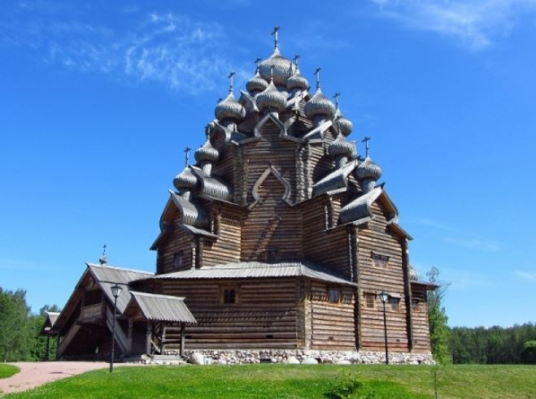
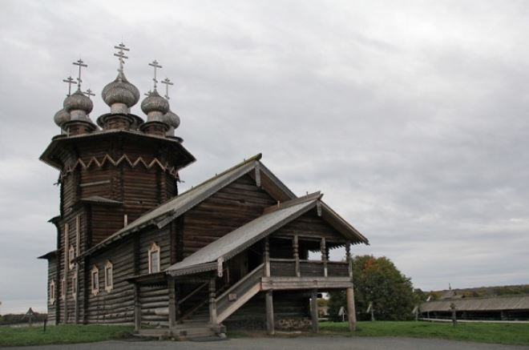

Остров Кижи имеет площадь 5 кв.км, расположен в Онежском озере. Красота местности -деревянные церкви острова Кижи. От столицы Карелии – Петрозаводска его отделяют 68 км. Здесь расположен музей-заповедник под открытым небом с архитектурными памятниками, предметами быта и иконами, собранными на протяжении нескольких столетий в русских, карельских и вепсских деревнях. Музей окружен естественным лабиринтом из множества живописных островов и заливов. Ежегодно сюда съезжаются более 160 тыс. туристов со всего мира. Экскурсионное обслуживание ведется на 8 языках.
История
История Кижей уходит в далекое прошлое: известно, что эти земли были заселены прибалтийско-финскими племенами. С 11в. Кижи и ближайшие к нему острова находились во владении новгородских бояр. Под влиянием Новгорода в северном крае все шире распространялось христианство. В 15 веке все Новгородские владения вошли в состав Московского государства.Новгородские земли делились на провинции (пятины), в состав которых входили округа(погосты).С 16 века остров Кижи становится центром Спасского погоста, в подчинении которого находилось 130 сел, а также центром культурного, аграрного и административного центра Заонежья. Из записей, сделанных в Писцовых книгах, можно предположить, что деревянные церкви на острове Кижи существовали с конца 15 века. Более ранние документы не сохранились.
Что можно посмотреть на острове
Музей-заповедник Кижи представляет собой своеобразную модель Карелии в многообразии ее историко-архитектурных и этнографических особенностей. Сектора музея комплектуются жилыми, культовыми и бытовыми постройками, которые периодически свозятся на остров. В фондах музея хранятся 87 памятников архитектуры, 500 с лишним уникальных икон.
Церковь Преображения Господня на острове Кижи
Сердцем музея является холодная пирамидальная Церковь преображения Господня, построенная в начале XVIII века. Венцом творения является сложнейшая система из 22 больших чешуйчатых глав, расположенных в четыре яруса. Высота церкви – с 11-этажный жилой дом. Внутрь церкви вход закрыт. Поэтому туристам можно любоваться только экстерьером здания.
Церковь Покрова Пресвятой Богородицы
К югу от церкви преображения Господня можно увидеть церковь Покрова, которая ведет свою историю с далекого 1764 года. Церковь имеет 10 глав, которые перекликаются с главами Преображенского храма, обеспечивая единство архитектурного ансамбля. Внутри церкви – выставки религиозного содержания. В основном здесь представлены иконы.
Интересные факты
Считается, что остров Кижи получил свое название от карельского слова «кижат», что в переводе означает «игрища». Ученые-археологи придерживаются мнения, что в дохристианские времена здесь проходили языческие ритуалы и обряды.
Помимо историко-архитектурного музея, на острове Кижи находятся три деревни — Кижи, Васильево и Ямка. В каждой из них всего два-три двора, но это не мешает им ежегодно привлекать туристов — таких пейзажей и такого неповторимого крестьянского колорита не найти больше ни в одной точке земного шара.
Есть легенда, что оккупанты все же планировали уничтожить остров Кижи и все его достопримечательности, однако, увидев невероятную, практически неземную красоту Покровской и Преображенской церквей, пилоты, управляющие бомбардировщиками, сбросили бомбы в озеро. Однако документальных подтверждений этому факту до сих пор не нашлось.
Считается, что церкви острова построены без единого гвоздя. Это утверждение верно лишь отчасти — при возведении стен и башен гвозди действительно не использовались, а вот при покрытии куполов осиновыми чешуйками они все-таки применялись.